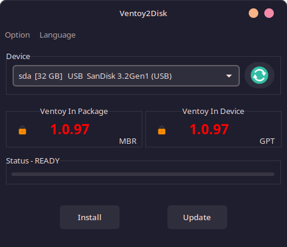

Tutorial Instalasi Arch Linux Single Boot

Assalamualaikum Wr Wb. Selamat datang di Website Tutorial Saya. Kali ini saya akan berbagi tentang bagaimana caranya menginstal Arch Linux pada Laptop atau PC kita.
Sebelum itu, alangkah lebih baiknya kita backup data-data terpenting kita karena kita akan meng-format SSD atau HDD kita yang ada pada Laptop atau PC kita.
Dengan kata lain, kita akan mengganti Sistem Operasi saat ini dengan Sistem Operasi berbasis GNU/Linux dan sala satunya adalah Arch Linux.
Ada hal-hal yang perlu disiapkan, diantaranya:
- Laptop atau PC
- File ISO Arch Linux, bisa diunduh melalui link berikut ArchLinux
- Software USB Burner seperti Ventoy, bisa diunduh melalui link berikut Ventoy
- USB Flashdisk minimal berukuran 8GB
- Data-data hasil Backup (Jika Ada)
Anda hanya memerlukan file "archlinux-Year.Month.Day-x86_64.iso" saja.
Jika hal-hal di atas sudah disiapkan, maka kita bisa mulai.
1. Masukkan USB Flashdisk ke dalam Laptop atau PC.
2. Buka Software Ventoy yang sudah diinstal.
Tampilannya akan seperti ini:
Tampilan akan berbeda sesuai Sistem Operasi dan Tema yang sedang digunakan.
USB Flashdisk berada pada Section Device, pilih USB Flashdisk yang akan kita gunakan dan pastikan ukurannya minimal 8GB.
Klik Install dan akan ada peringatan sebagai berikut:

Data-data dalam USB Flashdisk akan di format agar bisa dipakai untuk Boot dari USB. Jadi pastikan anda backup data-data yang penting jika ada.
Karena kepanjangan jadi saya berikan langkah-langkah dari Website Resminya:
Arch Wiki